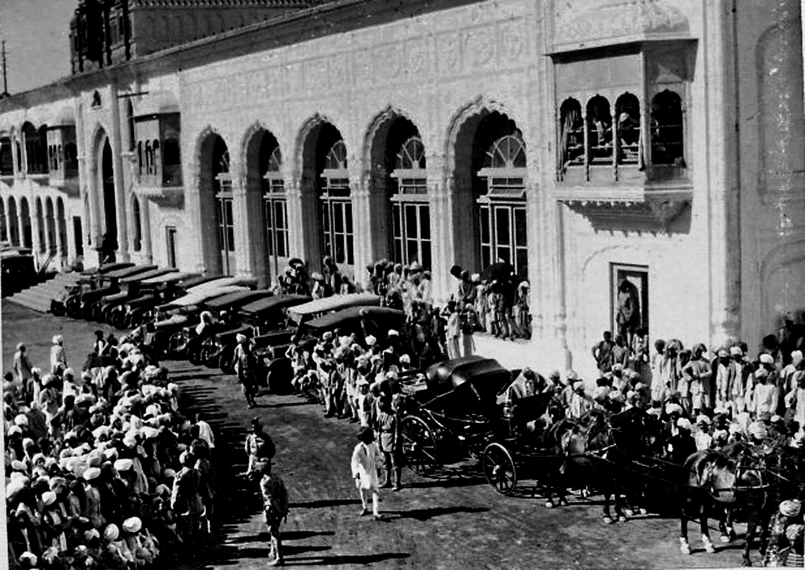
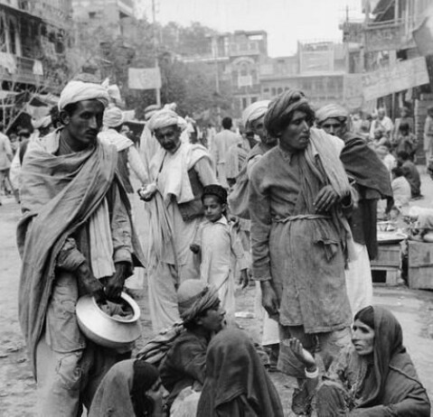

The Jammu Genocide
Precursors to the Genocide
Such a climate of fear and uncertainty, by April 1947,
non-Muslims from the violence in the Rawalpindi division were
arriving in other parts of the Punjab and the Kashmir region,
expecting to return after the violence ceased. With in a week of
the killings, 'a large flock' of the Hindus and Sikhs from
Rawalpindi division started migrating to neighbouring Kashmir
region. The embittered Sikh and Hindu refugees' tales of
violence raised animosities wherever they settled. They planned
revenge and produced and circulated wildly inflammatory
pamphlets and brochures.
At the time also the Dogra Hindu Maharaja Hari Singh's
own preference was that the State should remain independent or
accede to India, knowing that majority of the State's populace
was inclined to link its future with Pakistan. In order to maintain
his stranglehold, the Maharaja had initiated systematic tyrannical
campaign against the 'dissenters' as early as the outset of May.

Catalysts for the Genocide
By the mid-August, the state administration had not only
demobilised a large number of Muslim soldiers serving in the
state army but also the Muslim police officers, whose loyalty
was suspected, had also been sent home. The State's Muslim
majority contagious to the Punjab, particularly in Poonch, started
organizing resistance forces in the border districts, There were
regular reports of 'persecutions' and 'mass murders of Muslims
in Poonch'. The violence sparked off an exodus and Muslim
refugees flowed in the opposite direction. A large number of
Kashmiri Muslim families from Poonch started pouring into the
border districts of Rawalpindi, Jhelum, Gujrat and Sialkot.
The refugees related harrowing tales of massacres by the state Dogra
troopers. This image of Kashmir inflamed the Punjabi Muslims
and, in particular stirred up the movement of tribes of NorthWest Frontier Province.
The Muslim Pukhtoon tribes of North-West Frontier
Province stirred up the movement and declared a 'jihad'. The
raiders who numbered about 20,000 crossed the border and
smuggled arms into Kashmir. They, along with the Muslim army
deserters from the state forces and retired army men, came to
help rouse the peasantry of Poonch. Indeed around 60,000
Poonchis and other 'hill men' had served in the British Indian
Army during the Second World War.
Genocide of Muslims begins
On 26 October the Maharaja fled from Srinagar to
Jammu as the threat of 'liberation' armed activists poised to
capture the city. The situation was much the same in Jammu. The danger for
Muslims multiplied 'every hour' as hordes of Hindu and Sikh
refugees started pouring into Jammu from areas that were going
to become Pakistan. In April, the first trickle of refugees had
already arrived in Jammu followed the March 1947 violence in
Punjab Rawalpindi, Attock, Murree, Bannu and Hazara. The
daily flood peaked in late 1947 when an estimated 160,000
population of Hindus and Sikhs migrated from the western
districts of Pakistan. By that time, majority of the non-Muslim
population of Sialkot had fled to Jammu during the partitionrelated
disturbances. Sialkot and Jammu were nothing less than
twin cities. The north-eastern part of Sialkot was principally
inhabited by the Dogras inhabitants. They were closely linked
culturally and linguistically with the Hindu Dogras of Gurdaspur
on the one side and Jammu on the other. As the Punjab boundary
award was announced and the disturbances worsened, about
100,000 Hindu and Sikh refugees from Sialkot migrated to
Jammu.
In Jammu city alone, by mid- September, they numbered
65,000. Their arrival brought the communal tension to 'the
breaking point'. They carried with them harrowing stories of
Muslim atrocity, which were retold in the press and given
official sanction by the state media. For example, a Jammu based
Hindu paper boasted that 'a Dogra can kill at least two hundred
Muslims' which illustrated the communal level to which the media and parties had sunk.
This further intensified the Muslim
killings and exodus. Almost immediately, the disgruntled Dogra
refugees backed by their relatives from Jammu started a general
clearing of the Muslim population. They were provided arms and
ammunition by the state officials. Sikh deserters of the Sialkot
Unit, who migrated in Jammu and also had taken away with
themselves rifles and ammunition now utilised them.25 The daily
Telegraph of London journalist reported on 12 January 1948:
'Yet another element in the situation is provided by Sikh
refugees from the West Punjab who have sized Muslim lands in
Jammu… they originated the massacres there last October to
clear for themselves new Sikh territory to compensate for their
losses in Pakistan and to provide part of the nucleus of a future
Sikhistan'.
Aftermath & impact of the Jammu Genocide

The level of destruction was worst in Jammu city where
Muslims were in minority. Their concentration was in Ustad da
Mohalla, Pthanan da Mohalla and Khalka Mohalla. The latter
was much larger than the other two combined. These Muslim
localities presented a picture of destruction by mid-September
1947. Hundreds of Gujars were massacred in mohalla Ram
Nagar. Village Raipur, within Jammu cantonment area was burnt
down. The killings and dispersal of the Muslims from Jammu city
were a clear example of the ethnic cleansing of a locality. By mid September, Jammu
city's Muslim population was
halved. By late November, hundred of thousands Kashmiri
refugees had arrived in the border towns of Sialkot, Gujrat and
Jhelum.
The Dogra state troops were at the forefront of attacks on
Muslims. The state authorities were also reported to be issuing
arms not only to local volunteer organizations such as RSS, but
to those in surrounding East Punjab districts such as Gurdaspur.
G. K. Reddy, a Hindu editor of the Kashmir Times said in a
statement published in the daily Nawa-i-Waqt, 'I saw the armed
mob with the complicity of Dogra troops was killing the
Muslims ruthlessly. The state officials were openly giving out
weapons to the mob'. The state administration had not only
demobilised a large number of Muslim soldiers serving in the
state army, but Muslim police officers, whose loyalty was
suspected, had also been sent home. In Jammu city, the Muslim
military were disarmed and the Jammu cantonment Brigadier
Khoda Box replaced by a Hindu Dogra officer. There were also
reports that the Maharaja of Patiala was not only supplying
weapons, but also a Sikh Brigade of Patiala State troops were
also operating in Jammu and Kashmir. The state authorities
intended to create a Hindu majority in the Jammu region. The
Dogra troopers ejected the entire population of Muslims of Dulat
Chak on 28 November, claiming it was a part of the state. The
troops of a Sikh Brigade raided the bordering villages and forced
the Muslims there to evacuate and go beyond the old Ujh river
bed.The daily Times of London reported the events in Jammu
with such a front page headings: 'Elimination of Muslims from
Jammu' and pointed out that the Maharaja Hari Singh was 'in
person commanding all the forces' which were ethnically
cleansing the Muslims.
After the closure of Sialkot-Jammu railway line, the
Muslims started concentrating in a camp from isolated pockets to
the large enclaves within the Jammu Police Lines. They sought
assistance from the Pakistan government to take immediate steps
to ensure their safety. In the first week of November, the
Pakistan government despatched many buses to Jammu city to
transport the refugees into Sialkot. When the convoy arrived at
Jammu-Sialkot road, Dogra troopers, RSS men and many armed
Sikhs attacked the caravan and killed most of the passengers and
abducted their women.